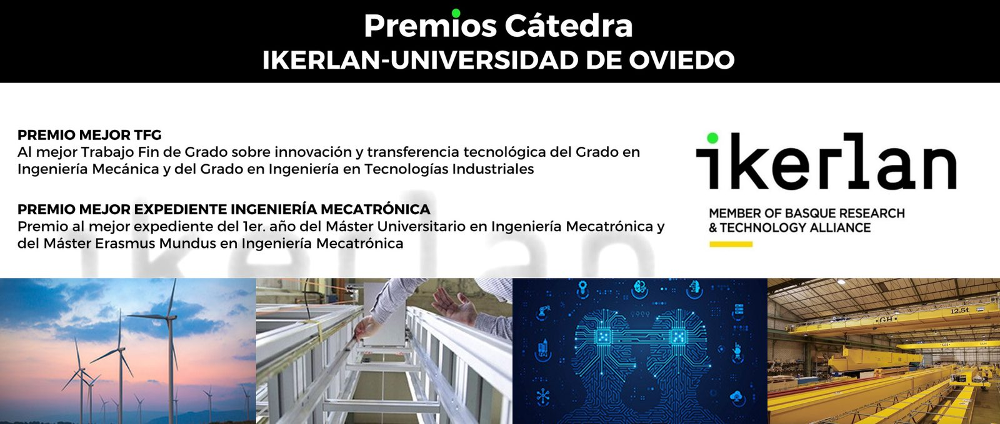

Convocatoria de un Premio al mejor expediente en Ingeniería Mecatrónica y un Premio TFG sobre innovación y transferencia tecnológica presentado durante el curso 2021-2022 en los Grados en Ingeniería Mecánica y en Ingeniería en Tecnologías Industriales de la EPI de Gijón de la Universidad de Oviedo.

El Premio al mejor expediente de Ingeniería Mecatrónica se resolverá directamente por la Dirección de la Cátedra y los Coordinadores del Máster y no es necesario que los estudiantes lo soliciten. El Premio TFG, financiado por la Cátedra IKERLAN, tendrá una dotación global bruta de mil euros (1.000 euros) y se entregará con un diploma acreditativo al estudiante premiado/a, así como con un diploma acreditativo al tutor/a del trabajo que resulte premiado. Este Premio es compatible con otros premios que haya podido recibir previamente el mismo TFG. Las candidaturas deberán ser remitidas por correo electrónico a la Fundación Universidad de Oviedo, según procedimiento establecido en las bases. El plazo de presentación de solicitudes finalizará el 31 de agosto de 2023.
Documentos relacionados en: Fundación Universidad de Oviedo – Cátedra IKERLAN – Noticias (funiovi.org).